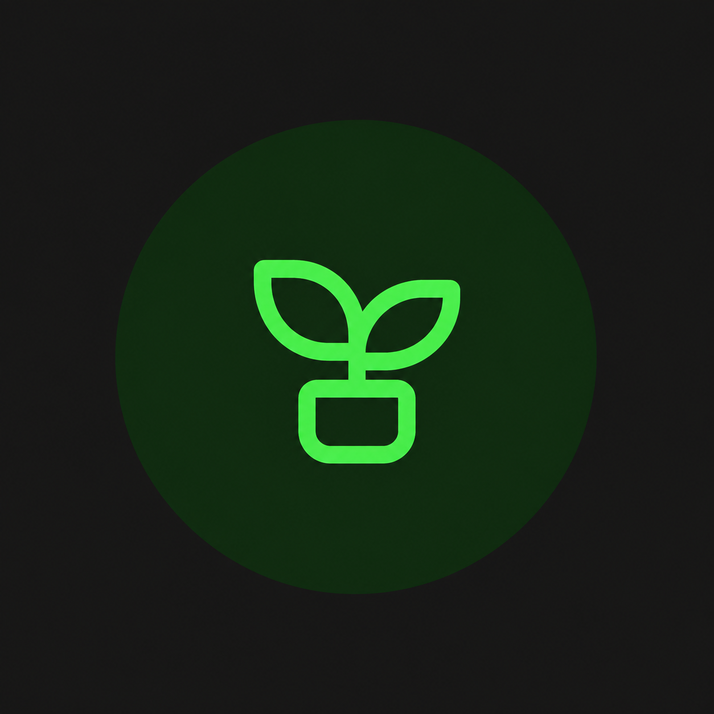

Cesta Solidária
Distribuição de alimentos para famílias em situação de vulnerabilidade.
Clique na imagem para saber mais.
Seja voluntário
Reforço Escolar
Apoio educacional para crianças e jovens da comunidade.
Clique na imagem para saber mais.

Horta Comunitária
Produção de alimentos saudáveis por meio do trabalho coletivo.
Clique na imagem para saber mais.